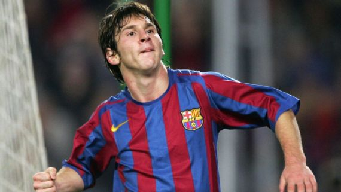
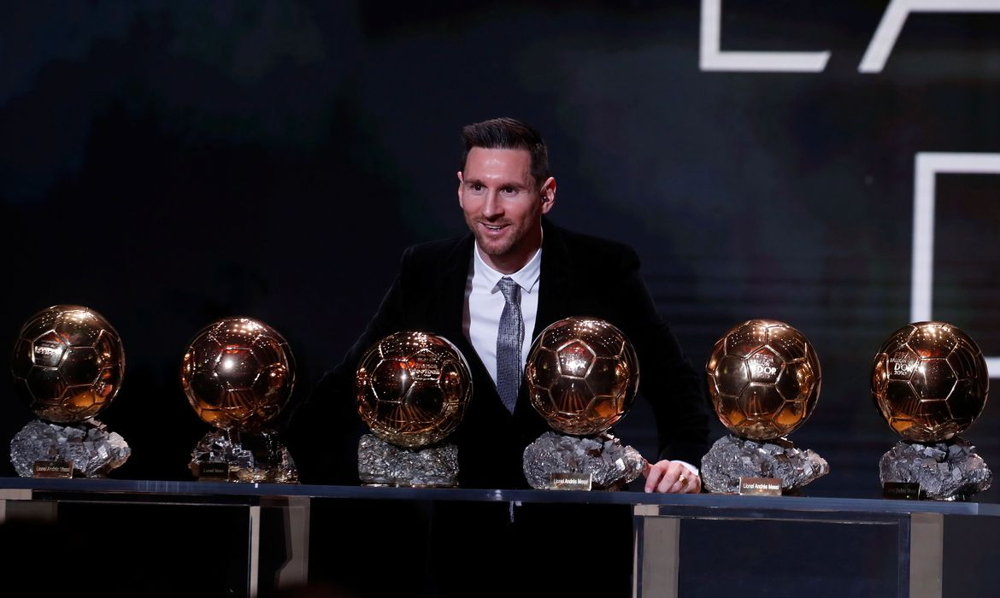
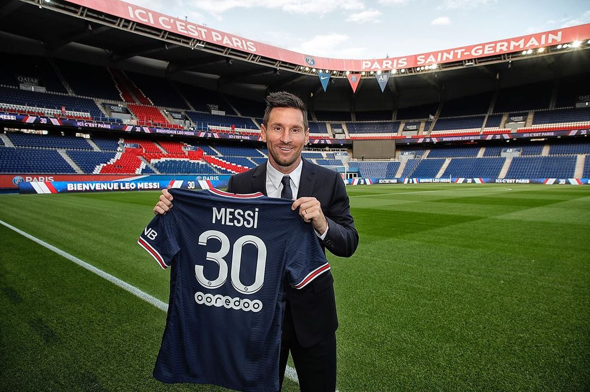
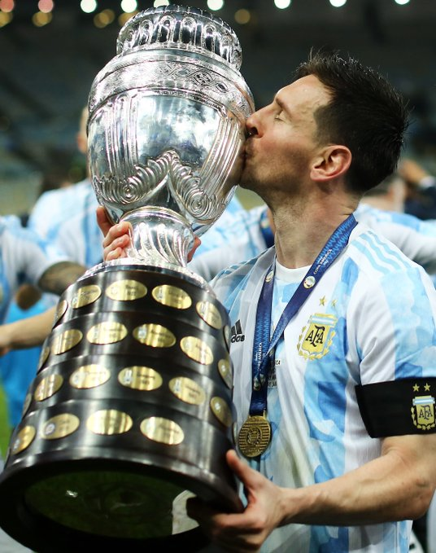

Um pouco da historia de um dos maiores jogadores da historia.

Inicio da Carreira
- Nascido e criado em Rosário, na Argentina, Messi foi diagnosticado com uma deficiência do hormônio do crescimento quando criança, então com 13 anos, se mudou para a Espanha para ingressar no Barcelona, que concordou em pagar por seu tratamento médico.
- Messi foi integrado ao time principal na temporada 2003–04, com apenas dezesseis anos, debutando em um amistoso contra o Porto, na inauguração do Estádio do Dragão, em 16 de novembro de 2003. O primeiro jogo oficial, porém, viria quase um ano depois, na temporada seguinte
Saiba mais

Tragetoria no Barcelona
- Lionel Messi conquistou 35 títulos pelo Barcelona na história, se tornando o atleta mais campeão da história do clube catalão: são 10 títulos do Campeonato Espanhol, oito da Supercopa da Espanha, sete da Copa do Rei, quatro da Champions League, três da Supercopa Europeia e três do Mundial de Clubes.
- Seus feitos com a camisa do Barcelona o levaram a arrebatar por quatro vezes consecutivas (2009, 2010, 2011 e 2012) oBallon d'Or, oferecido pela revista francesa especializada France Football, a mais tradicional premiação do futebol dado ao melhor futebolista europeu, que a partir de 2011 passou a denominar-seBola de Ouro da FIFA. Incluindo 2016, 2019 e 2021.
Saiba mais

Saida do Barcelona
- No dia 5 de agosto de 2021, o Barcelona anunciou em comunicado oficial que o jogador não seguiria no clube. Ao todo, Messi atuou por 17 temporadas e fez 672 gols em 778 jogos.
Saiba mais

Seleção Argentina
- Pela Seleção Argentina, Messi é o maior goleador de todos os tempos. No nível Sub-20, ele venceu a Copa do Mundo FIFA Sub-20 de 2005, terminando o torneio com a Bola de Ouro e Chuteira de Ouro, e venceu também uma medalha de ouro olímpica nos Jogos Olímpicos de Verão de 2008. Recentemente ganhou a Copa America em cima do Brasil e a Copa dos Campeões em cima da Italia e por último a copa do mundo em cima da França.
Saiba mais